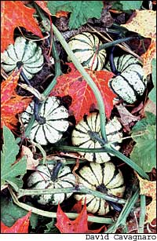

A truly diverse crop, winter squashes come from four different Cucurbita species: C. maxima, C.
mixta, C. moschata and C. pepo. Above: (From left) delicatas and an acorn; ‘Early Butternut,’ a moschata; and
‘Sunshine,’ a maxima hybrid variety developed by Johnny’s Selected Seeds.